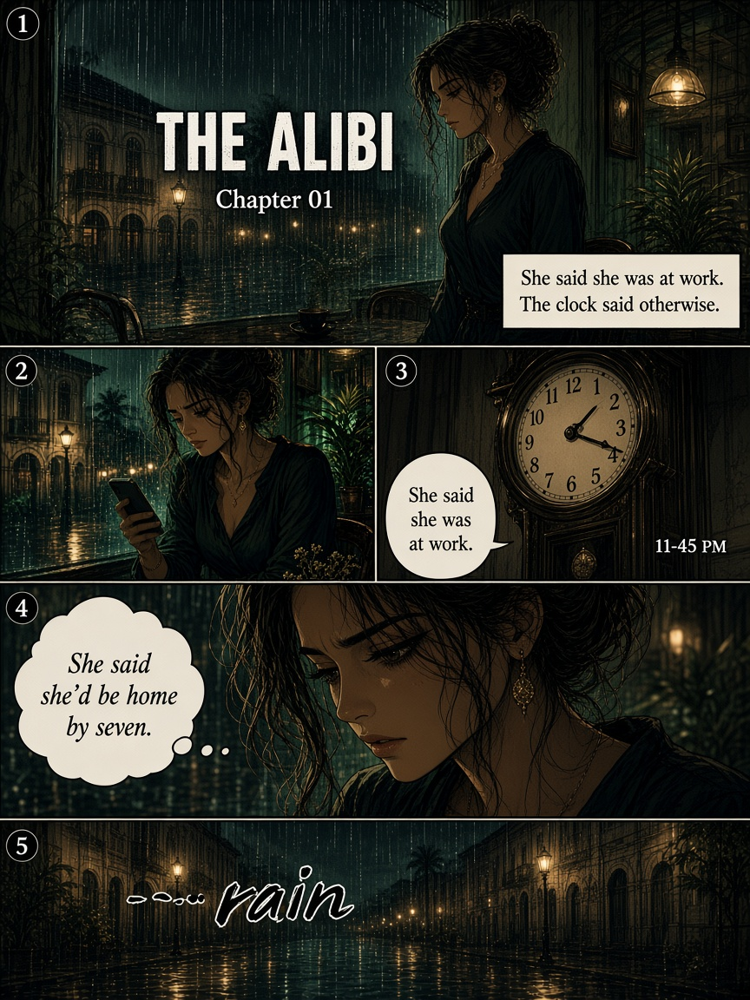
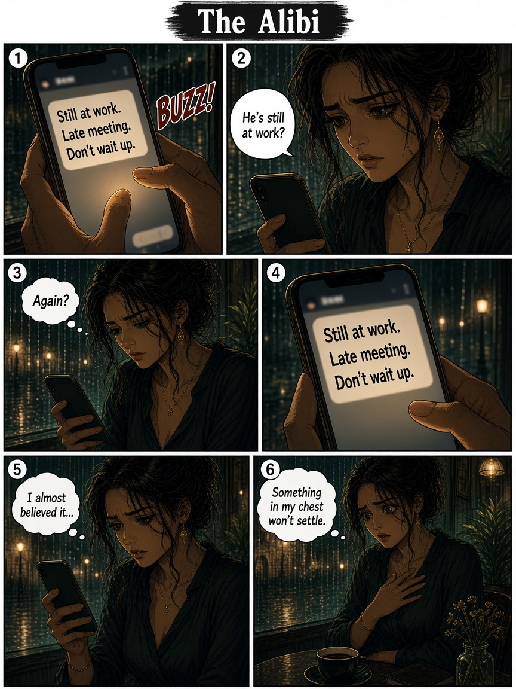
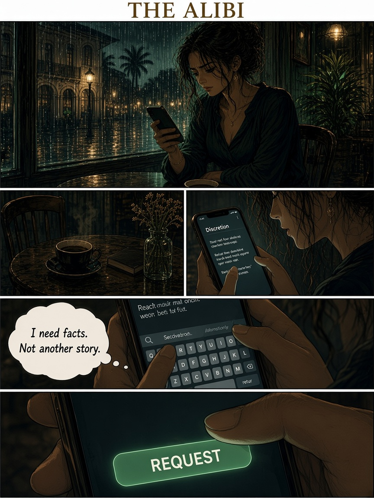
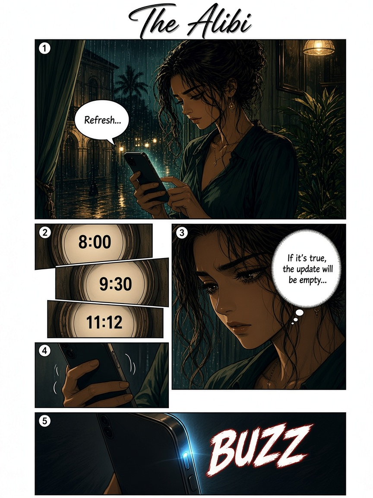
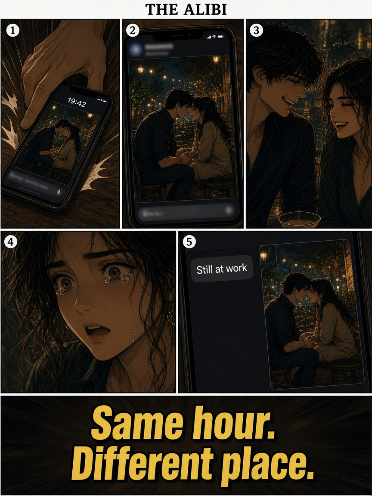
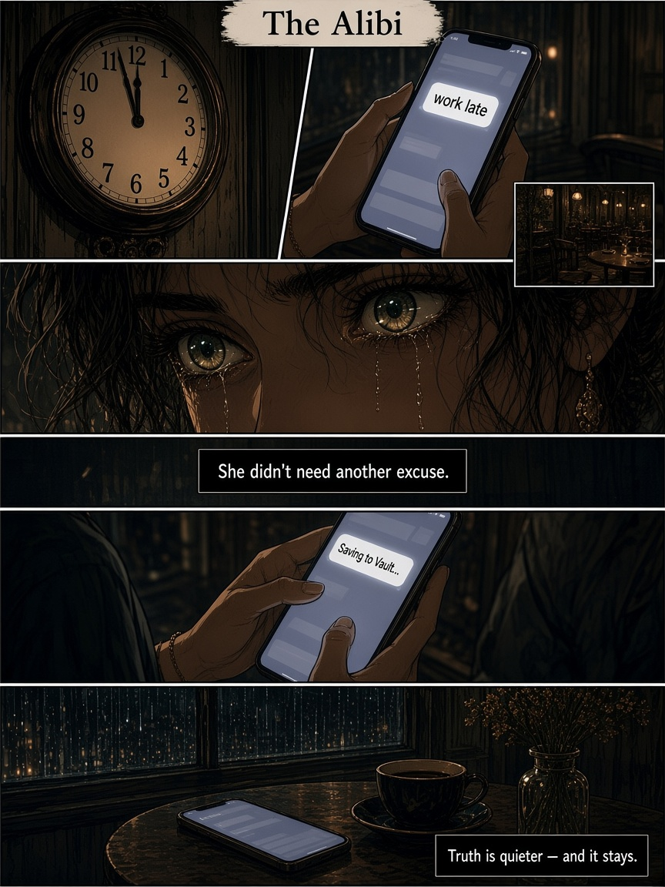
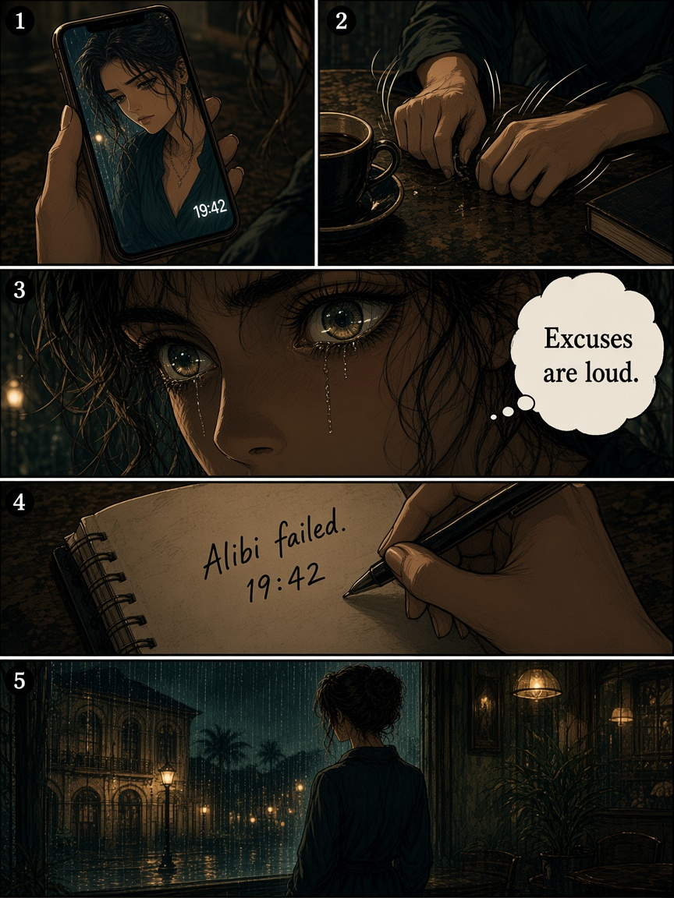
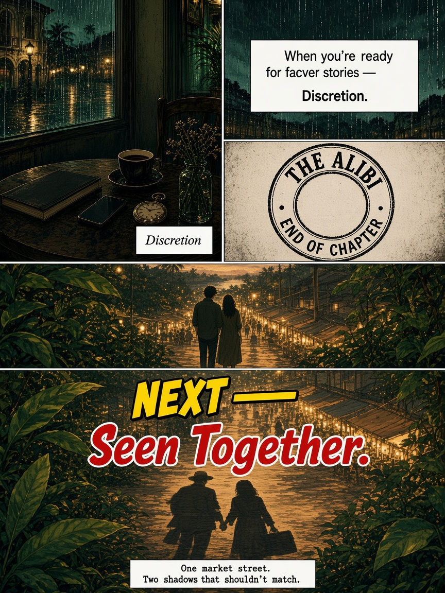

She said she’d be home by seven.

“Still at work.” Again?

Empty chair. Cold coffee. She asks for facts.

8:00. 9:30. 11:12. Waiting for the drop.

19:42. Same hour. Different place.

She didn’t need another excuse.

Hands shake. Then steady. Alibi failed.

Facts over stories. Next: Seen Together…